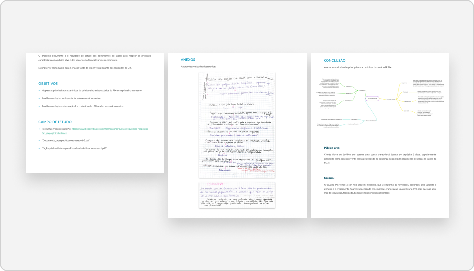
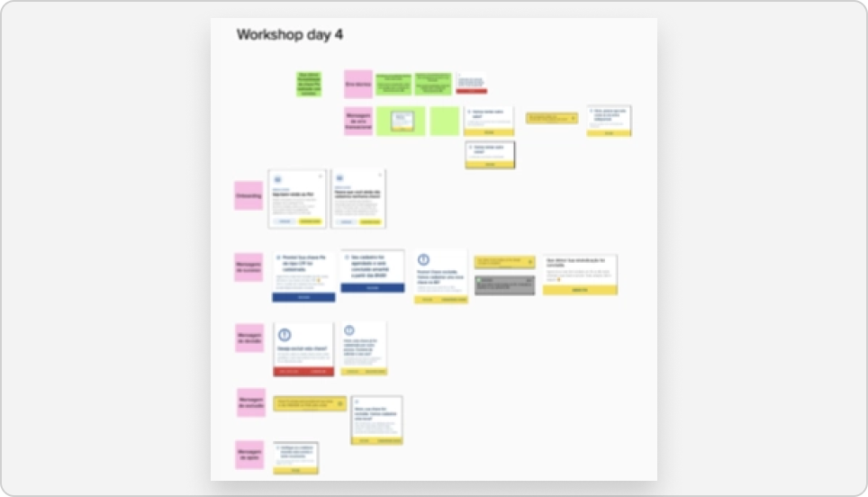
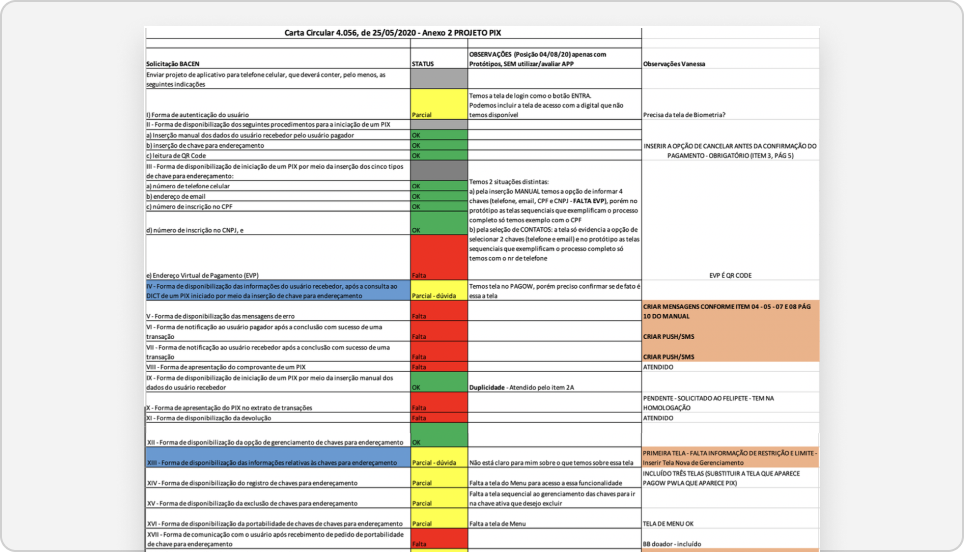
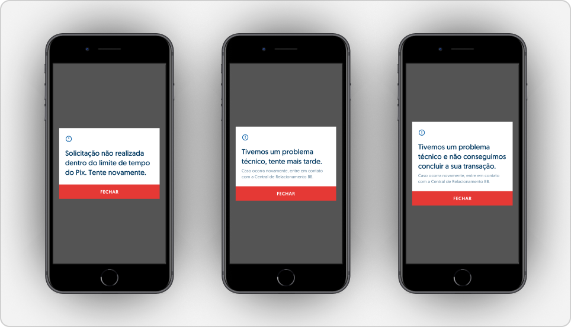
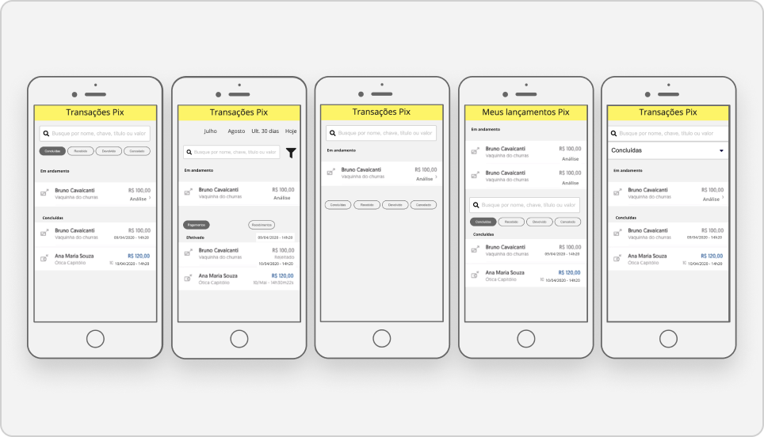
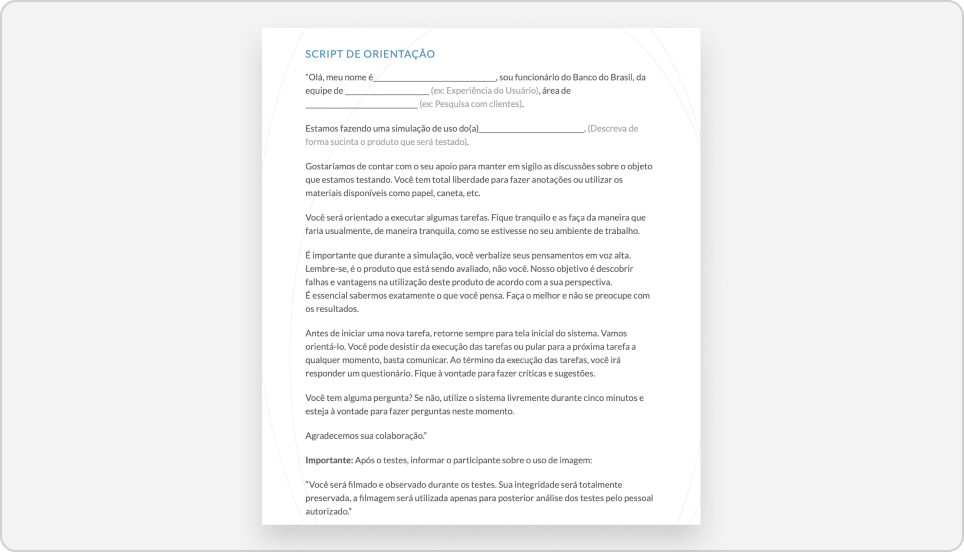
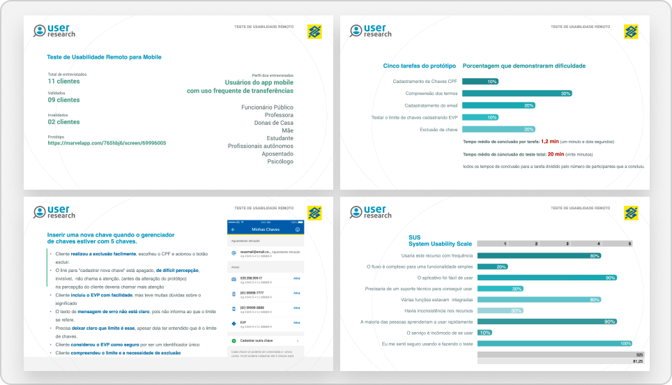
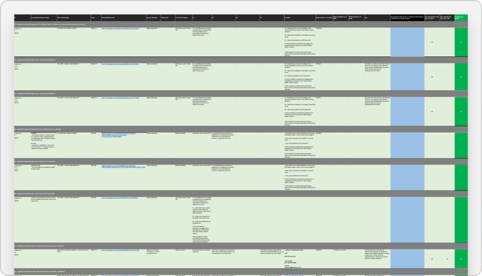

CASE 5 · BANCO DO BRASIL · 2020
Design Estratégico em Escala Nacional
Como o UX Writing garantiu a estabilidade do Pix no BB
- Função
- UX Writer Lead & Product Designer Sênior
- Empresa
- Stefanini
- Cliente
- Banco do Brasil
- Duração
- 8 meses
- 100%
- Estabilidade com zero queda de servidores no dia da inauguração
- +1M
- Chaves cadastradas nas primeiras 24h
- 1 Novo
- Padrão nacional de “EVP” para “Chave Aleatória”
Resumo em 30 segundos
Problema
O Banco Central exigiu o Pix com um manual regulatório rígido e prazo curto, e milhões de pessoas tentariam cadastrar suas chaves ao mesmo tempo.
O que fiz
Liderei o UX Writing e atuei como Product Designer: traduzi a regulação para a linguagem do BB, desenhei fluxos e criei mensagens preventivas para erro e instabilidade.
Resultado
Mais de 1 milhão de chaves em 24h sem queda de servidores, e o Bacen trocou “Chave EVP” por “Chave Aleatória” a partir da defesa técnica que elaborei.
A solução
Mensagens claras para cadastrar chaves Pix sem sobrecarregar o app
Uma jornada de cadastro e gestão de chaves Pix no app do BB, com textos alinhados ao tom de voz do banco e às regras do Bacen, e mensagens preventivas para espera, erro e instabilidade.
O termo regulatório “Chave EVP”, que os usuários não entendiam, virou “Chave Aleatória” no padrão nacional.


Decisões-chave
Mensagens preventivas para espera e instabilidade
- Em vez de
- Mostrar só mensagens de erro genéricas.
- Por quê
- Milhões de pessoas tentariam cadastrar chaves no mesmo dia, e a ansiedade podia gerar “refresh” compulsivo e sobrecarregar os servidores.
- Resultado
- Ajudaram a conter a ansiedade do usuário no lançamento, que teve mais de 1 milhão de chaves em 24h sem queda no app.
Questionar o termo exigido pelo Bacen
- Em vez de
- Manter “Chave EVP”, como estava no manual regulatório.
- Por quê
- Os testes de usabilidade mostraram que os usuários não entendiam o termo.
- Resultado
- O Bacen aprovou a troca para “Chave Aleatória”, que virou padrão nacional.
Auditoria de conteúdo como fonte única para o código
- Em vez de
- Deixar os textos só nas telas e nos protótipos.
- Por quê
- Garantir que o texto validado com o cliente fosse o mesmo que ia para produção.
- Resultado
- Os desenvolvedores copiavam os textos direto para o código, sem retrabalho nem inconsistências.
Visão geral e desafio
Durante a pandemia, o Banco Central determinou a implementação do Pix. O cenário era de extrema complexidade: manual regulatório rígido com nomenclaturas técnicas e prazo agressivo.
O desafio consistia em traduzir essa burocracia para a linguagem acessível do BB e desenhar fluxos que evitassem a sobrecarga dos servidores diante da ansiedade de milhões de brasileiros querendo cadastrar suas chaves.
Meu papel
Como UX Writer Lead e Product Designer Sênior, minha responsabilidade era conduzir o usuário pela interface de forma simples, intuitiva e direta, garantindo uma jornada fluida com a linguagem do BB. Meu objetivo principal foi resolver problemas por meio da comunicação, elevando a usabilidade e a clareza do produto.
Atividades
A seguir, algumas das atividades e etapas que realizei ao longo deste case.
Kick-off e Entrevista com Stakeholders
Realizei um kick-off com os stakeholders para alinhar os objetivos do projeto, mapear o público-alvo, definir requisitos e planejar as próximas etapas.Desk Research
Com a introdução do Pix no cenário nacional, analisei a regulamentação do Banco Central do Brasil (Bacen) para estruturar a jornada dos usuários, redigir o conteúdo e desenhar as telas, preservando a excelência no atendimento aos clientes do Banco do Brasil. Para isso, realizei uma extensa pesquisa documental das diretrizes do Bacen, alinhando-as ao Guia de Tom de Voz do BB, além de liderar entrevistas com partes interessadas das áreas de Negócios e TI para identificar potenciais riscos operacionais.Workshops
Com o objetivo de padronizar a linguagem em toda a experiência do aplicativo, promovemos workshops focados nas diretrizes do Tom de Voz do Banco do Brasil e na aplicação de boas práticas de UX Writing. Essa iniciativa garantiu consistência e alinhamento verbal em todos os pontos de contato da jornada.




Inventário de Conteúdo
Para mapear e centralizar as informações, criei um inventário de conteúdo abrangente em uma planilha do Excel. Esse levantamento reuniu todas as mensagens obrigatórias exigidas pelo Bacen, somadas às comunicações desenvolvidas pela equipe de UI no aplicativo do Banco do Brasil na área do Pix.Fluxos de Conteúdo e Jornadas (To-Be)
Com base nos aprendizados do desk research, mapeei e desenhei as jornadas exigidas pelo Bacen. Essa etapa foi fundamental para estruturar a arquitetura de informação, identificar eventuais gargalos e alinhar os requisitos técnicos para a implementação do novo meio de pagamento.



Análises de Curadoria de UX Writing e Sessões de Cocriação
Para a elaboração das mensagens, promovemos sessões colaborativas com toda a equipe para levantar novas ideias e revisar os materiais existentes. Por meio dessas oficinas de cocriação no Miro e no Teams, liderei a curadoria de UX Writing de cada texto, assegurando o alinhamento com as regras de negócio e as heurísticas de usabilidade. Mesmo com a rotina de trabalho remoto, mantivemos a integração do time de UX Writing com as equipes do Banco do Brasil e parceiros externos. Migramos os textos mapeados no inventário de conteúdo para o ambiente colaborativo, permitindo uma reescrita conjunta com foco nos seguintes pilares:- Conformidade com as diretrizes regulatórias do Bacen;
- Alinhamento à identidade verbal e tom de voz do Banco do Brasil;
- Adequação ao contexto de aplicação de cada mensagem;
- Aplicação das heurísticas de usabilidade.
Mockups de Mensageria
Para alinhar as propostas e obter a aprovação da diretoria, estruturei estrategicamente mockups de mensagens preventivas de cenários de erros e instabilidade para conter a ansiedade do usuário e prevenir sobrecarga de requisições nos servidores.


Wireframes de Baixa Fidelidade
Para começar a validar a arquitetura de informação do Pix no aplicativo do BB, criei wireframes de baixa fidelidade e protótipos interativos, e os disponibilizei no Marvel App para revisão e aprovação dos stakeholders.Layout de Alta Fidelidade
Criei os layouts de alta fidelidade com base no design system do Banco do Brasil para estruturar o fluxo de cadastro de CPF. O principal objetivo foi explorar e validar sugestões inteligentes de chaves com base nos dados já existentes no cadastro do cliente, reduzindo o esforço manual e tornando a jornada muito mais rápida e intuitiva.


Documentação de Conteúdo na Interface para Revisão e Aprovação
Com as telas em alta fidelidade prontas, realizei a revisão minuciosa de cada texto, sugerindo melhorias pautadas no tom de voz do Banco do Brasil e nas diretrizes do Bacen. Para garantir o alinhamento com as expectativas do negócio, criei mockups interativos no Marvel App com os fluxos e as respectivas mensagens aplicadas à interface. Essa estrutura centralizou e documentou todo o processo, permitindo que os responsáveis pelo Pix no BB visualizassem o contexto completo, facilitando a aprovação do conteúdo assíncrono e o envio de comentários ou solicitações de ajuste entre diferentes áreas.


Teste de Usabilidade com Foco em Writing
Para validar a eficácia do novo conteúdo, o time realizou testes de usabilidade remotos via Lookback, focados na clareza e na recepção das mensagens. Acompanhei as sessões como observadora, atenta às reações verbais e faciais dos participantes enquanto liam os textos, para avaliar se a comunicação proporcionava uma experiência fluida e simplificava o uso do Pix no aplicativo do Banco do Brasil. As sessões evidenciaram a ineficácia e a incompreensão do termo “Chave EVP”, e usei esses achados como base para a defesa técnica. O processo do time teve quatro etapas:- Planejamento e roteiro;
- Recrutamento dos voluntários;
- Condução dos testes;
- Relatório consolidado com índice SUS.




Defesa Técnica
Com base nesses achados, elaborei uma defesa técnica estratégica para ser apresentada pelo Banco do Brasil ao Banco Central. Essa fundamentação permitiu obter a aprovação para a alteração oficial do termo “Chave EVP” para “Chave Aleatória”, juntamente com outros ajustes técnicos essenciais.Auditoria de Conteúdo
Com todo o conteúdo transcrito e vinculado aos protótipos na planilha, realizamos as análises no Miro e validei os fluxos com clientes e stakeholders. Em seguida, estruturei uma planilha de auditoria de conteúdo, reunindo as mensagens ajustadas após os testes de usabilidade e os links atualizados dos protótipos. Essa centralização otimizou o trabalho da equipe de desenvolvimento, permitindo que os textos fossem copiados diretamente para o código, eliminando retrabalho e inconsistências.Handoff
Em parceria direta com os desenvolvedores, compartilhei a Auditoria de Conteúdo detalhada, prestando acompanhamento e suporte contínuos a cada mensagem dentro do ambiente de desenvolvimento.



Resultados
O que o meu trabalho causou
Novo padrão nacional
A defesa técnica que elaborei, baseada nos testes de usabilidade, levou o Bacen a adotar “Chave Aleatória” no lugar de “Chave EVP”.
Mensagens que protegem a infraestrutura
As mensagens preventivas ajudaram a conter o “refresh” compulsivo no dia do lançamento, reduzindo a pressão sobre os servidores.
Do protótipo ao código sem retrabalho
A auditoria de conteúdo virou a fonte única dos textos para os desenvolvedores.
Modelo replicado em outros canais
A arquitetura conversacional e a clareza do Pix serviram de base para chatbots, web e sistemas internos.
O que aconteceu com o projeto
Lançamento sem falhas no app
Mais de 1 milhão de chaves cadastradas nas primeiras 24h, sem queda de servidores. O BB foi destacado na Folha e na Veja como o único grande banco sem falhas no app no dia do lançamento. Esse resultado é do time inteiro, incluindo engenharia e infraestrutura.
Aprendizados
Advocacia pelo Usuário Vence a Burocracia
Questionar regulamentações (como a regra inicial do Bacen) exige embasamento forte em dados qualitativos. Quando o teste de usabilidade prova a fricção, a estratégia de design se torna incontestável em mesas de diretoria e órgãos federais.
Comunicação Preventiva como Gestão de Crise
Desenhar para cenários de espera, erro ou latência sistêmica vai além de boa usabilidade: é uma poderosa estratégia de Relações Públicas, capaz de reposicionar uma marca frente aos concorrentes no dia do seu maior lançamento.
Auditoria de Conteúdo como Ponte entre Silos
O inventário e a auditoria de conteúdo não são meras planilhas burocráticas, são as ferramentas definitivas para garantir que o que foi validado com o cliente pelo Design será o que o Desenvolvedor subirá para a produção, eliminando retrabalhos e ruídos.
UX Writing é Ferramenta de Engenharia
Palavras bem escolhidas na interface protegem a infraestrutura tecnológica de uma empresa. O design de conteúdo pode literalmente salvar os servidores de uma sobrecarga.